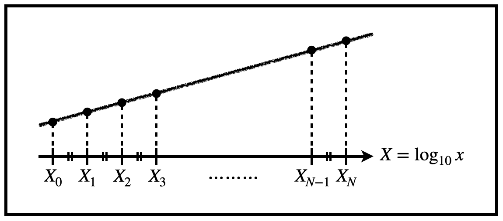

logスケール上のグラフに等間隔な点を打つ
■ はじめに
宇宙のような何桁ものオーダーを議論する分野において，log scaleのグラフは何度も使うことになります．そこで対数の復習も兼ねて，log
scale上で等間隔に点を打つということを考えてみましょう．
■ 対数の復習
■ 解説
話を元に戻してlogスケールのグラフ上に等間隔に分割することを考えてみましょう．以下ではlog scale上での離散的な値を\(X_i\)，このときのlinear
scaleでの値を\(x_i\)と大文字/小文字で分けて解説します．すなわち両者には，
$$X_i=\log_{10}x_i$$が成り立ちます．
問題設定として，下図のようにlog
scale上での2個の離散値\(X_0,X_N(X_0< X_N)\)の間を等間隔になるよう\(N\)分割し，このときに隣り合う任意の2つの離散値\(X_i,X_{i+1}(0\leq i<
N)\)が，linear scaleにおいてどう対応づけられるかを考えます．

始めに問題設定より次の式が成り立ちます．
\begin{cases}
X_{i+1}=X_i+\Delta X\\
\Delta X \equiv \dfrac{X_N - X_0}{N} = \rm{const.}
\end{cases}
今，\(X_{i+1}=\log_{10}x_{i+1}\)であることを考慮すると，
\begin{align*}
X_{i+1}&=X_i+\dfrac{1}{N}(X_N-X_0) \\
&=\log_{10}x_{i+1}
\end{align*}
よって，
\begin{align*}
x_{i+1}&=10^{X_i+(X_N-X_0)/N} \\
&=10^{\log_{10}x_i+(\log_{10}x_N-\log_{10}x_0)/N} \\
&=10^{\log_{10}x_i}\cdot (10^{\log_{10}x_N}\cdot 10^{\log_{10}x_0})^{1/N} \\
&=x_i\cdot \Bigl(\dfrac{x_N}{x_0} \Bigr)^{\frac{1}{N}}
\end{align*}
が得られます．\(r\equiv (x_N/x_0 )^{1/N}\)は両端の点と分割数で決まる定数なので, \(x_{i+1}=r\cdot x_i\)
と等比数列が成り立つことが示されます．
以上より，linear scaleでの離散値間の幅\( \Delta x_i \)は，
\begin{align*}
\Delta x_i&\equiv x_{i+1}-x_i \\
&= x_i\cdot \Bigl(\dfrac{x_N}{x_0} \Bigr)^{\frac{1}{N}} - x_i\\
&= \Bigl\{\Bigl(\dfrac{x_N}{x_0} \Bigr)^{\frac{1}{N}}-1 \Bigr\}x_i
\end{align*}
で決まります．log scaleにおいて幅を一定にしている分，linear scaleでは\(x_i\)に応じて幅が変化することが分かります．
Back